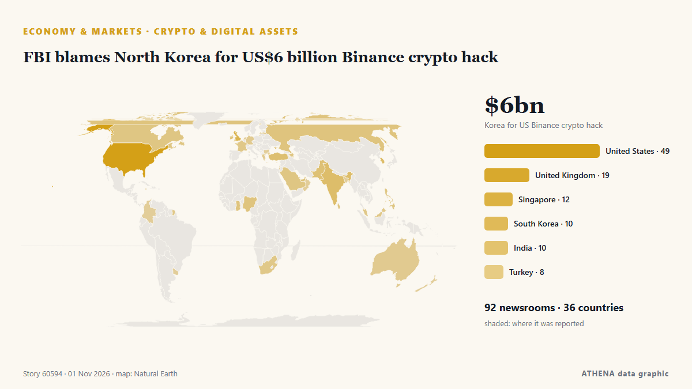

Märkte
Märkte heute: was sich bewegt hat und warum
Letzte 24 Stunden — Ereignisse: 65, Länder: 23. Höchstes Risiko jetzt: 6.0 — WTI struggles below $87.50 as Democrats seek end to Iran war after midterm sweep.

Wirtschaft und MärkteFBI blames North Korea for US$6 billion Binance crypto hack
Binance says a security breach impacted about $6.3 billion in assets. von CNBC World
| 24. Okt. | 6 |
|---|---|
| 25. Okt. | 9 |
| 26. Okt. | 32 |
| 27. Okt. | 23 |
| 28. Okt. | 21 |
| 29. Okt. | 24 |
| 30. Okt. | 37 |
| 31. Okt. | 6 |
| 1. Nov. | 13 |
| 2. Nov. | 69 |
| 3. Nov. | 31 |
| 4. Nov. | 41 |
| 5. Nov. | 39 |
| 6. Nov. | 23 |
Marktmonitor
Marktmonitor - amtliche Werte
In welche Richtung sich amtliche Marktkennzahlen bewegen - steigend, fallend oder unverändert - mit dem letzten amtlichen Wert und seinem Datum sowie den von ATHENA bestätigten Marktnachrichten. Amtliche Werte, keine Echtzeitkurse.
Energie
| 1 Tag | 1 Woche | 1 Monat | Amtlicher Wert | |
|---|---|---|---|---|
| Brent crude | ▼ | ▼ | ▼ | $107,03/bblAmtliche Daten vom 3. Nov. 2026 |
| WTI crude | ▼ | ▼ | ▲ | $99,64/bblAmtliche Daten vom 3. Nov. 2026 |
| US natural gas (Henry Hub) | ▲ | ▼ | ▼ | $2,63/MMBtuAmtliche Daten vom 3. Nov. 2026 |
| European natural gas (1 Monat · 3 Monate · 12 Monate)(1M · 3M · 12M) | ▲ | ▲ | ▲ | $25,49/MMBtuAmtliche Daten vom 1. Sept. 2026 |
| Coal (Australia) (1 Monat · 3 Monate · 12 Monate)(1M · 3M · 12M) | ▲ | ▲ | ▲ | $153,84/tAmtliche Daten vom 1. Sept. 2026 |
Nahrungsmittel
| 1 Monat | 3 Monate | 12 Monate | Amtlicher Wert | |
|---|---|---|---|---|
| Wheat | ▲ | ▲ | ▲ | $246,85/tAmtliche Daten vom 1. Sept. 2026 |
US-Aktienmärkte
| 1 Tag | 1 Woche | 1 Monat | Amtlicher Wert | |
|---|---|---|---|---|
| S&P 500 | ▼ | ▼ | ▼ | Ungewöhnliche Bewegung Nur Richtung (Index © Cboe)Amtliche Daten vom 5. Nov. 2026 |
| Nasdaq Composite | ▼ | ▼ | ▼ | Ungewöhnliche Bewegung Nur Richtung (Index © Cboe)Amtliche Daten vom 5. Nov. 2026 |
Zinsen, Risiko und Dollar
| 1 Tag | 1 Woche | 1 Monat | Amtlicher Wert | |
|---|---|---|---|---|
| US 10-year Treasury yield | ▼ | ▼ | ▼ | 4,84 %Amtliche Daten vom 5. Nov. 2026 |
| Market volatility (VIX) | ▲ | ▲ | ▲ | Ungewöhnliche Bewegung Nur Richtung (Index © Cboe)Amtliche Daten vom 5. Nov. 2026 |
| US dollar, broad index | ▬ | ▲ | ▲ | 121,67Amtliche Daten vom 30. Okt. 2026 |
Der Euro gegenüber anderen Währungen
| 1 Tag | 1 Woche | 1 Monat | Amtlicher Wert | |
|---|---|---|---|---|
| EUR/USD | ▼ | ▬ | ▼ | 1,1165 USDAmtliche Daten vom 6. Nov. 2026 |
| EUR/GBP | ▬ | ▬ | ▼ | 0,8341 GBPAmtliche Daten vom 6. Nov. 2026 |
| EUR/CHF | ▼ | ▼ | ▼ | 0,9143 CHFAmtliche Daten vom 6. Nov. 2026 |
| EUR/JPY | ▼ | ▲ | ▼ | 176,77 JPYAmtliche Daten vom 6. Nov. 2026 |
| EUR/CNY | ▼ | ▲ | ▼ | 7,4485 CNYAmtliche Daten vom 6. Nov. 2026 |
| EUR/TRY | ▼ | ▲ | ▲ | 55,996 TRYAmtliche Daten vom 6. Nov. 2026 |
| EUR/NOK | ▲ | ▲ | ▼ | Ungewöhnliche Bewegung 10,5260 NOKAmtliche Daten vom 6. Nov. 2026 |
Quellen: US Energy Information Administration (Öl, US-Erdgas), IWF (europäisches Erdgas, Kohle, Weizen), US-Finanzministerium und Federal Reserve (10-jährige Rendite, Dollar-Index) Cboe (VIX), S&P Dow Jones Indices (S&P 500) und Nasdaq (Nasdaq Composite), über FRED (Federal Reserve Bank of St. Louis); Euro-Referenzkurse © Europäische Zentralbank. Die Werte sind die letzten amtlichen Zahlen mit Datum, keine Echtzeitkurse. Die Richtungen berechnet ATHENA.
Krypto, ETFs und Aktien in den Nachrichten
- Nasdaq 100 suffers worst day since 2020 Risiko 5.5 6. Nov.
- Chainalysis says breach exposed password hashes and live tokens Risiko 3.8 6. Nov.
- Taiwan to activate NSF amid stock rout Risiko 4.6 6. Nov.
- DraftKings Stock Plunges 20% as $700 Million Prediction Markets Bet Tests Investor Patience Risiko 2.7 6. Nov.
- Mark Zuckerberg Takes Fifth-Richest Title From Michael Dell As Stocks Absorb Midterm Results Risiko 0.0 6. Nov.
- Russian stock market in the green in early trading hours Risiko 0.0 6. Nov.
- Crypto Liquidations Top $1 Billion as Bitcoin Tests 11-Week Low Risiko 2.5 6. Nov.
- Anthropic IPO Faces $500 Billion Valuation Hit After Tech Stocks Plunge Risiko 5.5 6. Nov.
- Shares plunge in Tokyo, Seoul after US tech rout Risiko 5.2 6. Nov.
- CBN sets N10bn, N15bn capital requirements for stablecoin issuers Risiko 0.0 6. Nov.
Tracker
Neueste
Aramco’s Q3 profit jumps 34.5% to $36.3bn
RIYADH: Saudi Aramco’s net profit rose 34.5 percent year on year to $36.3 billion in the third quarter, boosted by higher revenue and a gain from the sale of its stake in Malaysian refining and… von Arab News
Sharp drops for AI stocks overwhelm markets worldwide as oil prices jump
The latest shudder for stocks in the artificial-intelligence industry pulled markets lower worldwide on Thursday, while oil prices hit their highest levels since May on worries about the war with… von Stuff
ADNOC signs LNG deal with Gujarat Energy to supply 4 million tonnes over 10 years
Woodside will supply QatarEnergy with up to 3 million tpy of LNG for 20 years from its Louisiana LNG project, with deliveries expected to start in 2030. von Oil & Gas Journal
Oil rises on Iran war uncertainty after Trump’s Republicans face election rout
Brent futures rise 82 cents, or 0.8%, to $104.42 a barrel. von Express Tribune
Oil eases on Middle East diplomacy hopes, Saudi attacks keep supply worries alive
Oil prices edged lower on Tuesday as the potential for a resolution in the US-Israeli war on Iran kept supply fears at bay, but Brent stayed close to six-month highs as attacks on Saudi Arabia… von Business Recorder
Alphabet stock sinks as search woes cause revenue miss, cash burn worsens
Google parent Alphabet reported disappointing results in the core business of search advertising and a massive acceleration in… von BusinessWorld
BP profits hit 18-year high as Iran war drives up oil refining margins
Around quarter of EU refineries have shut down over past 2 decades, reducing domestic refining capacity by around 10%, while divestments have accelerated across Europe, says Dan Jorgensen. von Anadolu Agency (English)
Oil edges down as investors await US midterm election results
BEIJING: Oil prices slipped in early trade on Wednesday as investors awaited the results of the US midterm elections and their potential impact on peace talks in the Middle East, even as industry… von New Straits Times
Dakar Rally 2027 will not be held in Saudi Arabia, organisers say
The 2027 edition of the Dakar Rally has been moved out of Saudi Arabia due to security concerns, organisers Amaury Sport Organisation said on Sunday. von Cyprus Mail
Oil prices extend rally to near six-month high amid Houthi attacks on Saudi Arabia
Brent crude futures touched an intraday high of $114.94 a barrel on Friday after Houthi attacks on Saudi Arabia’s civilian and energy infrastructure, with India’s crude basket averaging $120.08 so… von The Hindu
Meta strikes deal to keep Zuckerberg in California after wealth tax concerns
Meta Platforms has struck a deal with Mark Zuckerberg to keep him in California after the CEO warned he was considering leaving the state that houses the company's headquarters if voters pass a… von MyJoyOnline
India's Crude Oil Import Bill Soars 46% as Middle East Crisis Drives Up Prices
India paid $15.4 billion to import crude oil in September, up by 46% from the year-ago import bill of $10.5 billion, as international oil prices and the Indian import crude basket soared amid… von OilPrice.com